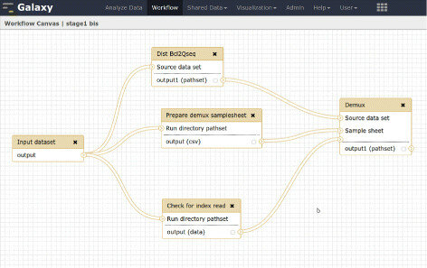
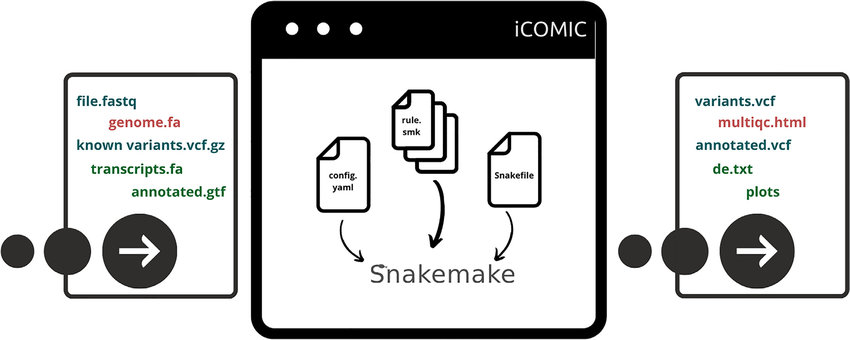

Provenance in data-analysis workflows
Samuel Grayson†*, Darko Marinov*, Reed Milewicz†, Daniel S. Katz*
* University of Illinois Urbana-Champaign
† Sandia National Laboratories

Outline
- How to use provenance to convert informal "workflows" (pile of scripts) to proper Workflows
- How existing projects can incorporate provenance to improve interoperability and longevity
Both of which are ongoing work!
Expectation
 Reality
Challenges
How is this output file generated?
What output files depend on this script?
How to reproduce?
All solved by workflows, but we don't always have workflow representation
Converting to workflow: traditional approach
Human effort, careful reading

Converting to workflow: tracing approach
OS should keep track of how each file gets generated (computational provenance).
Black-box, system-level provenance tracing
Should not require root, work inside containers
PRovenance Observation/REplay (PROBE)
./script.sh --blue 42
probe record ./script.sh --blue 42
Uses LD_PRELOAD to interpose application


People who don't know about workflows end up creating one
Can't make people document more, but can make documentation easier/automatic
Caveats
- Not able to capture user input.
- No network accesses, so Jupyter notebook/server interactions are not recorded yet.
- Does not scale well to large number of processes.
- Workflows are not stable yet
Do existing workflows also benefit from provenance tracing?
Yes, to ensure reproducibility outside of the workflow engine
'End-to-end' data lineage throughout multiple systems
Could be collected by PROBE, workflow engine, or manual entry
Can be embedded in existing data formats (Parquet, HDF5, FITS)
Journey of a data-item
- Downloaded from web
- Processed with workflow engine 1
- Emailed as attachment
- Stored on a flash drive for 3 years
- Now, where was it downloaded from?
No single system controlling the movement of data
Provenance has to be stored in the data item itself!

Want real-world examples for PROBE
Will ensure PROBE works for your application, within reason